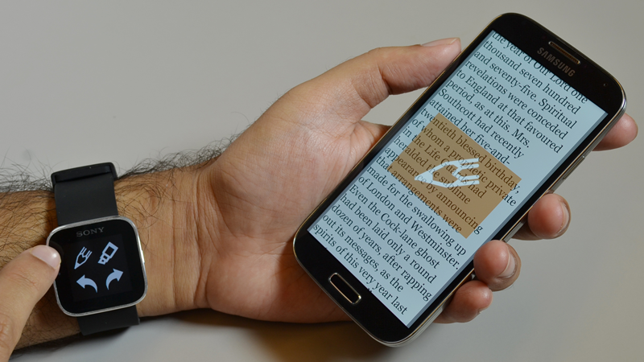

The P2P Web
Honey, we have to talk 
Three ingredients went to the first design of the WWW: A client-server protocol (HTTP), markup language (HTML), and addressing system (URL). User agents have been strictly acting as clients. What kind of interesting use cases will emerge if browsers can talk to each other without a server mediating? What will happen if user agents can expose services to one another? It's time for the Browser to break free and emancipate from the server.
A symphony of devices
With the explotion of form factors and the decline in prices many of us already own multiple personal devices (phone, tablet, laptop, watch...) Today, those pieces of hardware have limited ways to coordinate with one another to help achieve user's goals. Web applications don't have to be confined to a specific screen if the browser provides a mechanism to leverage a multidevice environment. The P2P Web introduces new opportunities to create interactions beyond the usage of a single device alone. You won't target a specific screen factor: Is this a mobile or a desktop app?. Designers and developers will consider the collection of available devices and orchestrate them to assist the user. What's the best input method for a specific task? A keyboard or a touch screen? Where is the information more conveniently displayed? In the laptop large screen, in your phone or in your wrist? We will be the conductors of a symphony of devices.
{kind=link}
The Browser is architected to be platform agnostic and can effectively run on any hardware. Responsive Web design is at this point well explored and understood. All the pieces are in place and we now just have to let the browsers talk without server mediation to open up a universe of possibilities. We will bring the idea of "write your application once and run it everywhere" to a new level. An application will literally run in every one of your personal devices
Performing tasks together
The P2P Web is not limited to your personal devices. Device to device communication will also enable interesting use cases when multiple users want to collaborate. For instance: You're in a party and decide to take a group picture. How can you make sure that everybody gets a copy of the photo? Do you friend everybody on facebook? Do you get all people's emails? Do you make sure everbody follows you on Twitter or Instagram? What about just broadcasting that photo from your phone to all the devices near by without relying on the Cloud. Cloud and the Internet will be optional and you won't have to share any data with a 3rd party.
Public spaces
The P2P Web is not constrained to mobile devices or personal computing. Any device capable of running a browser will be able to participate in the dialog. Imagine a vending machine sending a UI to your phone to assist you during the purchase. Or in a department store your phone could interact with a large display that will guide you to find the product you need.
Internet of things
P2P interactions won't be exclusive to devices with a screen. If we make Firefox easily embedabble we will set the stepping stone for the Web of things. Coffe machines, cars, light bulbs... any kind of object will be able to participate in the symphony of devices.
Mesh Networking
Once the Web implements a reliable mechanism to discover and pair devices mesh networking will be within reach. A publich channel can be opened in every device to relay and distribute data. Information will travel freely in the network of interconnected devices.
Strategic considerations
The P2P Web is compeling to the users and also tacticaly sound. The use cases enabled by a P2P approach won't rely on the cloud or an Internet connection. Features that are platform agnostic and work offline live in an interesting competitive space. Apple makes money by selling devices and they won't prioritize interoperability. A feature also available in the competition is one less reason to buy an Apple device. On the other hand Google makes money by making you click on ads. If you are offline, you cut the cord and Google cannot deliver advertisements to you. Google wants you to hit their services as much as possible. Each hit is an opportunity to show an add. Google will never prioritize offline features in the roadmap. Cross Platform and offline is an intersection where Mozilla might have an opportunity to grow realtively protected from the two main players in the mobile space.
Technical requirements
To deliver a good experience pairing two devices must be fast and reliable. Current solutions based on NFC or bluetooth are slow, unreliable and very short range. With an abstraction layer on top of WiFi Direct and LAN communication, Firefox could implement scalable, secure, offline services between your personal devices. There's currently an ongoing effort in several fronts at the Taipei office to bring P2P communications to gecko. Before talking about specific features a first stage of technical validation is required. We need to collect all the information pieces, identify gaps and assess the viability of the different feature ideas we're considering.